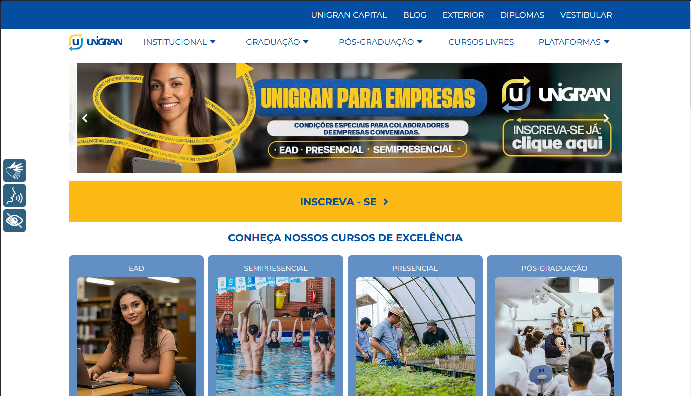
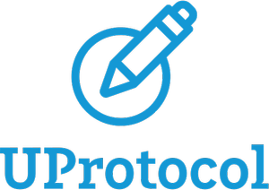

Rafael Siqueira
Sobre Mim
Olá! Sou o Rafael Siqueira, Desenvolvedor / Software Engineer. Apaixonado por tecnologia e por criar soluções inovadoras através do código.
Olá! Sou o Rafael Siqueira, Desenvolvedor / Software Engineer. Apaixonado por tecnologia e por criar soluções inovadoras através do código.

Site do Centro Universitário da Grande Dourados, onde me formei e atualmente atuo como Desenvolvedor e Mantenedor do portal, ajudando a manter a instituição posicionada digitalmente com sistema para publicação de artigos, notícias e integrações com apis externas.
Site para ajudar a centralizar as informações a respeito do meu personagem de games, o Dr Cirandinha, para que as pessoas possam encontrar as informações sobre mim de forma fácil.

Ferramenta para controle de atendimento ao cliente para empresas de TI, telemarketing e semelhantes; Foi meu TCC e onde eu aprendi a como NÃO fazer um sistema, já que não tinha muito conhecimento a respeito das ferramentase e tecnologias envolvidas no projeto.